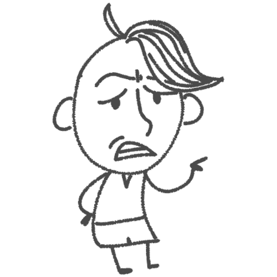
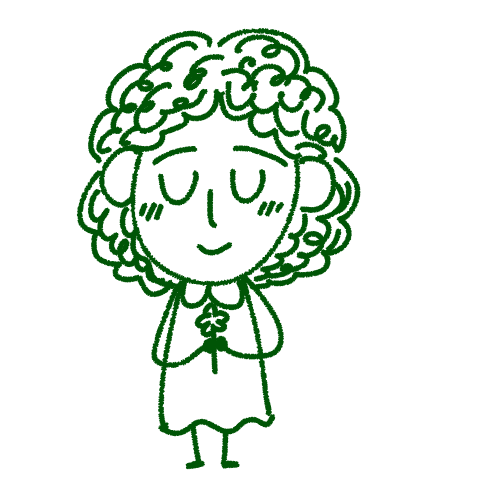

<회색인간> 김동식

비판적 회의론자
곡괭이 자루까지 씹어 먹는 장면을 보면서 결국 인간의 도덕이나 품위도 배부름 위에서만 유지되는 것 아닐까 싶었어. 극한 상황에 몰리면 인간은 너무 쉽게 무너져. 우리가 고상하다고 믿는 가치들도 사실은 환경이 허락할 때만 가능한 사치일지도 모르지.

가치 수호자
난 오히려 그래서 더 인간다움을 지키려는 태도가 중요하다고 생각해. 물론 극한 상황에서는 누구나 흔들릴 수 있어. 하지만 그런 상황 속에서도 서로를 포기하지 않으려는 마음이 남아 있기 때문에 인간인 거 아닐까? 회색 인간들이 완전히 괴물이 되지 않았던 것도 그 작은 양심 때문이라고 봐.
책 먹는 사자
저는 두 의견 다 이해됐어요. 특히 회색 인간들이 단순한 판타지 존재처럼 안 느껴졌거든요. 경쟁에 치이고 여유 없이 살아가다 보면 우리도 점점 감정이 메말라 가잖아요. 그래서 인간다움이라는 게 생각보다 엄청 쉽게 흐려질 수 있다는 점이 좀 무섭게 느껴졌어요.

비판적 회의론자
솔직히 말하면 굶어 죽어가는 상황에서 노래 같은 건 아무 쓸모도 없어 보여. 당장 빵 한 조각이 더 중요하지. 근데 웃긴 건, 결국 사람들을 움직인 건 빵이 아니라 그 노래였다는 거야. 쓸모없다고 여겨지는 것들이 오히려 인간을 인간답게 붙잡고 있었던 셈이지.
가치 수호자
맞아. 난 그 장면이 인간 안에 남아 있던 양심과 공감을 다시 깨워준 순간이라고 생각했어. 예술은 단순히 즐기기 위한 게 아니라, 우리가 단순히 살아남기만 하는 존재가 아니라는 걸 증명해 주는 거잖아. 서로를 불쌍히 여기고 마음을 움직이게 만든다는 점에서 정말 큰 의미가 있다고 봐.
책 먹는 사자
저도 그 장면이 제일 인상 깊었어요. 당장 현실적으로 도움 되는 건 아무것도 없는데, 노래 하나 때문에 사람들이 변했다는 게 신기했거든요. 오히려 그런 ‘쓸모없어 보이는 것’들이 인간을 가장 인간답게 만든다는 점이 되게 아이러니하게 느껴졌어요.
비판적 회의론자
죽어가면서까지 자기 이름과 가족 이야기를 기억해 달라고 하는 걸 보면서, 인간은 결국 잊히는 걸 제일 두려워하는 존재 같다는 생각이 들었어. 기억되지 않는 순간 존재 자체가 완전히 사라지는 느낌이잖아.
가치 수호자
그리고 그 장면이 더 특별했던 건, 서로를 외면하던 사람들이 ‘우리의 이야기를 남기자’는 목표 아래 다시 연결되기 시작했다는 점이야. 결국 인간은 혼자 살아가는 존재가 아니라, 서로를 기억해 주고 이야기해 줄 때 비로소 인간다움을 회복하는 것 같아.
책 먹는 사자
저도 그 부분 읽으면서 되게 먹먹했어요. 다들 살아남기 바빠서 서로를 신경 쓰지 못했는데, 마지막에는 이름을 기억해 달라고 부탁하잖아요. 결국 사람은 누군가에게 기억되고 연결되고 싶어 하는 존재라는 생각이 들었어요.
비판적 회의론자
사실 소설 속 회색 인간들이 그렇게 먼 이야기처럼 느껴지진 않았어. 매일 똑같이 반복되는 일상 속에서 무감각하게 살아가다 보면 우리도 조금씩 회색이 되어가는 거 아닐까? 효율과 경쟁만 남은 사회에서는 사람도 점점 기능처럼 변해버리니까.
가치 수호자
그래서 더 중요한 건 타인의 감정에 무뎌지지 않는 거라고 생각해. 누군가의 슬픔에 공감하고, 서로의 이야기를 들으려는 태도 말이야. 그런 감각을 끝까지 잃지 않으려는 노력 자체가 인간다움을 지키는 거대한 저항이라고 봐.
책 먹는 사자
맞아요. 저도 토론하면서 그런 생각 들었어요. 그냥 책 내용을 이해하는 걸 넘어서, 이렇게 서로 감상을 나누는 시간 자체가 우리 안에 쌓인 회색 먼지를 털어내는 과정 같더라고요. 그래서 이 작품이 더 오래 기억에 남는 것 같아요.